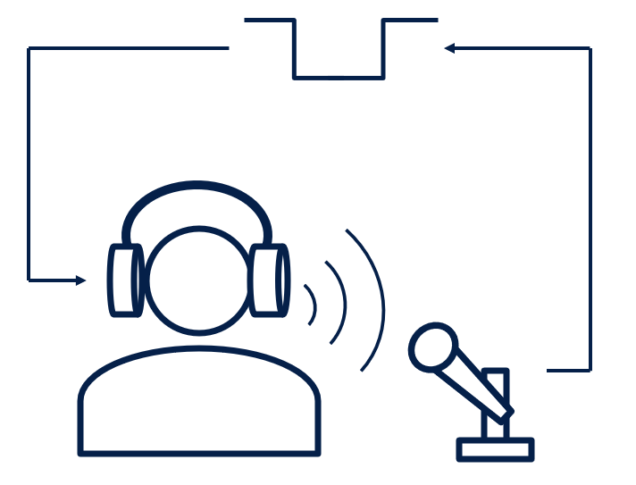
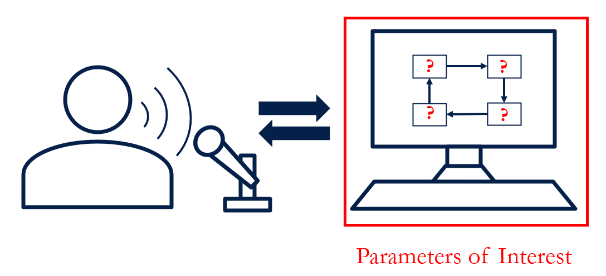
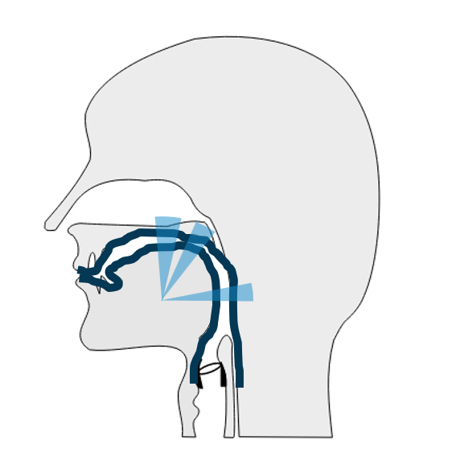

RESEARCH PROJECTS

Adaptation response to pitch shift during speech is attenuated upon relearning
Link to manuscriptWhen speakers hear a modified version of their voice that contains a small change in vocal pitch, they learn to adjust their vocal behavior on future utterances to produce a sound closer to what they intended. When they encounter the error a second and third time in a single session, the learning response is smaller compared with the initial learning.

Bayesian inference of state feedback control parameters for fo perturbation responses in cerebellar ataxia
Link to manuscriptWhen speakers hear a modified version of their voice that contains a small change in vocal pitch, they adjust their vocal behavior in real time to produce a sound closer to what they intended. Individuals with cerebellar ataxia show different vocal behavior in response to this task than do those who do not have cerebellar ataxia. Here we fit a computational model of speech motor control to these two data sets to identify the model parameters that can explain this difference.

Discrete constriction locations describe a comprehensive range of vocal tract shapes in the Maeda model
Link to manuscriptThe Maeda model is a classic vocal tract model that predicts the speech sound that would result from a particular vocal tract shape, formed through positions of the tongue, lips, and larynx. Using this model, we show that a comprehensive set of vowel sounds can be produced with vocal tract shapes that narrow in a few discrete locations. This allowed us to focus on these constriction locations in future iterations of our speech motor control model.
A model of motor and sensory axon activation in the median nerve using surface electrical stimulation
Link to manuscriptSurface electrical stimulation has been explored as a treatment for multiple medical conditions. Here we developed a new computational model of a sensory neuron's response to surface electrical stimulation in order to more effectively predict both the motor and the sensory response of the median nerve to surface electrical stimulation.